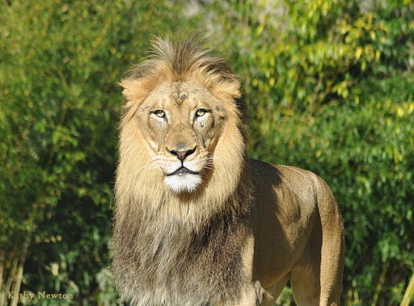

The lion is a very large cat with a long body, large head, and very short legs. Size and apperance varies considerably among sexes.
The males are characterized by the mane which varies between individuals and populations.
It may be absent; it may fringe the face; or it may be full and shaggy, covering the back of the head, neck and shoulders. In some lions, the mane are very dark, giving the beast a majestic apperance. Manes make the cat look larger and may serve to intimidate rivals or impress prospective mates. The female, or lioness, are generally smaller with a body length of 1.5metres, a shoulder height of 0.9-1.1metres,and a weight of 120-180kg.Lions generally live in groups called prides. A pride may consist of several lionesses and few breeding males and their cubs. The group may consist of 4-37 members, but 15 is usually the average size.Each pride has a well-defined territory that is strictly defended against intruding lions and a fringe area where some overlap may be tolerated.
